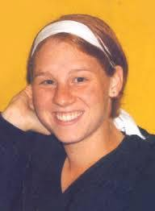

גלקוביץ' דנה ז"ל
נפגע/ת פעולות איבה
סיפור חיים
דנה גלקוביץ׳ ז״ל, בתם של פרלה ונתן, נולדה ברמת גן, בבית החולים תל השומר, בי״ח בתמוז תשמ״ג, 29 ביוני 1983. הוריה עלו כשנה לפני לידתה מדרום אמריקה. כשהייתה כבת שנתיים עברה עם הוריה ואחותה הבכורה שרון לקיבוץ ברור חיל שבנגב, ושם נולד כעבור ארבע שנים אחיה אוריין.
דנה גדלה והתחנכה בקיבוץ ברור חיל, וסיימה את לימודיה התיכוניים בבית הספר האזורי שער הנגב. היא אהבה מאוד לרקוד, ובמהלך שנות לימודיה למדה בין היתר במגמת מחול. היא הצטיינה במיוחד בריקודי בלט, והביאה אל הבמה את אותה מסירות, רצינות וחיוניות שאפיינו אותה בכל תחום.
בכיתה י״א הצטרפה דנה למשלחת מטעם בית הספר למחנות הריכוז בפולין. היא הצטיינה בהדרכתה במסגרת המשלחת, ובשנה שלאחר מכן נבחרה להנחות כמדריכה צעירה את המשלחת שנשלחה מבית הספר.
דנה אהבה ללמוד, והשקיעה בכל נושא שבו בחרה לעסוק במסירות וברצינות. לצד זאת ידעה לשלב בחייה חברים רבים, טיולים ובילויים, וליהנות מכל רגע. היא הייתה צעירה מלאת חיים, חברותית, חרוצה ומאירה.
בסוף שנת 2001 התגייסה דנה לצה״ל. לאחר שעברה קורס מש״קיות הוראה, הוצבה לשרת במשמר הגבול. היא ביצעה את תפקידה במסירות ונהנתה מאוד משירותה.
לאחר שחרורה מצה״ל הצטרפה דנה לקבוצת מדריכים מטעם הסוכנות היהודית, ובמשך כמה חודשים הדריכה ילדים ולימדה עברית במחנה בארצות הברית.
באוקטובר 2004 החלה דנה ללמוד תקשורת במכללת ספיר שבדרום. את שנת הלימודים הראשונה סיימה בהצטיינות. בחופשת הקיץ חגגה את יום הולדתה ה־22, ותכננה לנסוע בסוף יולי 2005 לטיול במזרח עם בן זוגה אמיר.
שבעה באוקטובר והימים שאחריו ביום חמישי, ז׳ בתמוז תשס״ה, 14 ביולי 2005, שבה דנה מהלימודים לבית משפחתו של בן זוגה אמיר במושב נתיב העשרה, השוכן מצפון לרצועת עזה.
בשעה 18:00, כאשר עמדה בכניסה לבית, נחתה במקום פצצת מרגמה שנורתה מרצועת עזה. דנה נפגעה מרסיס בראשה ונהרגה במקום. בת 22 בלבד הייתה במותה.
דנה הובאה למנוחות בבית העלמין בקיבוצה, ברור חיל. היא הותירה אחריה את הוריה פרלה ונתן, את אחותה שרון, את אחיה אוריין ואת בן זוגה אמיר.
זיכרון ומילים מהלב אברהם שנפלד ספד לה במילים: ״זו הפעם קטף המוות מן המיטב. צעירה, רק עכשיו 22. ג׳ינג׳ית בצבע ובאופי, אישיות חזקה, חברה של כולם, מארגנת, רצינית, מדריכה, תלמידה מצטיינת, פרפקציוניסטית, נותנת מעצמה.״
עוד כתב עליה: ״זו דנה, המיטב של המיטב - של ההורים, של בני המשפחה, של הקיבוץ, של החברים שלה.״
בדברי ההספד תוארה דנה כצעירה חיונית, מחייכת, מוכשרת ונדיבה; מי שידעה להדריך, ללמוד, לרקוד, לחבר בין אנשים ולהאיר את סביבתה. חיוכה הכובש, רצינותה, אהבתה לחיים והיכולת שלה לתת מעצמה נותרו בלב משפחתה, חבריה וקהילת ברור חיל.
דנה נזכרת כאישה צעירה מלאת חיים, ערכית, אוהבת אדם, תלמידה מצטיינת וחברה אהובה. העולם רק נפתח בפניה, וחייה נגדעו באכזריות כשהייתה בתחילתה של דרך מלאה חלומות, אהבה ותוכניות לעתיד.